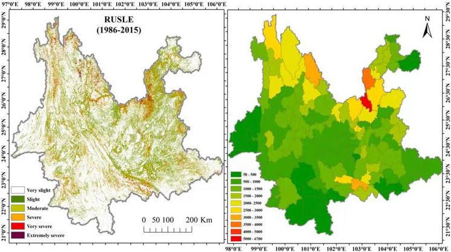
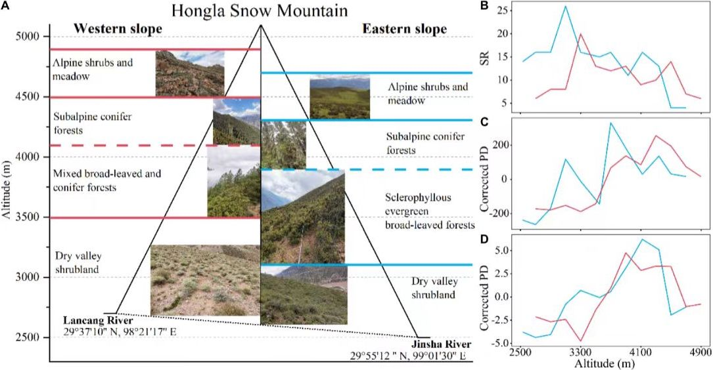

|
Research
My research interests are mainly in landscape ecology and ecological remote sensing,
and I am currently focusing on spatial patterns of soil erosion, ecological vulnerability assessment, landscape ecological security patterns,
and land use classification and evaluation combined with machine learning.
|
|

|
Spatiotemporal patterns and drivers of soil erosion in Yunnan, Southwest China: RULSE assessments for recent 30 years and future predictions based on CMIP6
Wenge Rao,
Zehao Shen,
Xingwu Duan
CATENA, 2023
abstract
Our historical assessments and future forecasts urge vegetation protection in karst areas and restoration in southern Yunnan
for future soil erosion control and regional ecological security.
|
|

|
Comparing Elevational Patterns of Taxonomic, Phylogenetic, and Functional Diversity of Woody Plants Reveal the Asymmetry of Community Assembly Mechanisms on a Mountain in the Hengduan Mountains Region
Fu Zhao,
Tao Yang,
Caifang Luo,
Wenge Rao,
Gengchen Yang,
Guo Li,
Zehao Shen
Frontiers in Ecology and Evolution, 2022
paper
We investigate biodiversity patterns and underlying mechanisms in the Hengduan Mountains of Southwest China
and highlight the priorities for biodiversity conservation in this region.
|
Service and Teaching
- Volunteer: the 19th Peking University Ecology Forum, 2022
- Volunteer: the 17th Peking University Ecology Forum, 2020
- Teaching Assistant: Landscape Ecology by Prof. Zehao Shen, Spring 2021
|
|
{kind=link}